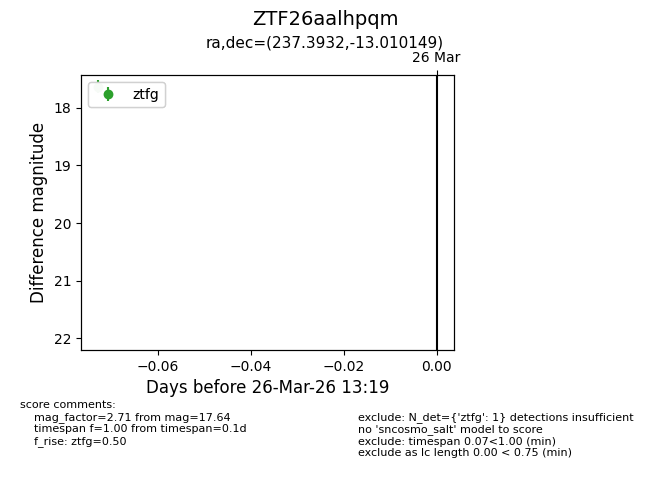
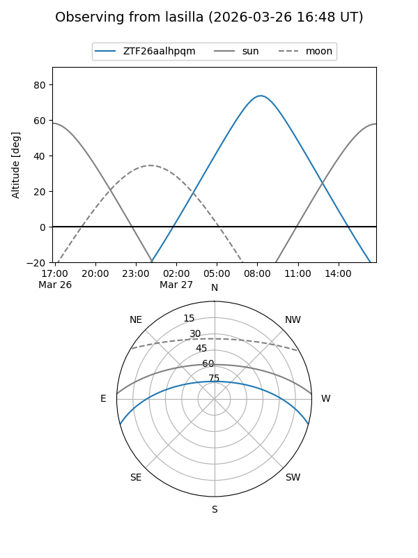
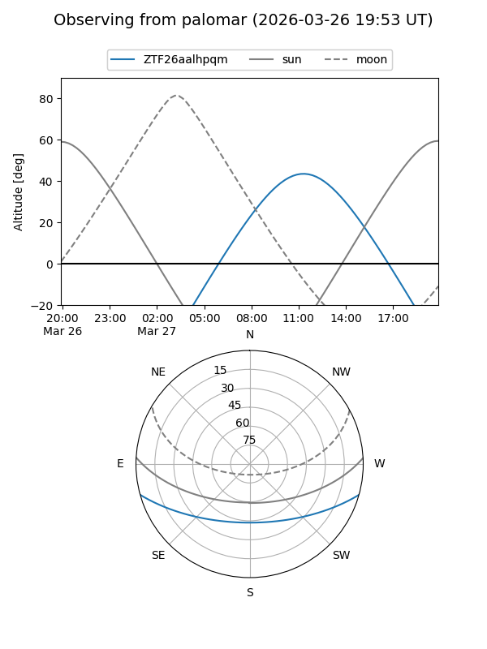

ZTF26aalhpqm
Target ZTF26aalhpqm at 2026-03-26 13:21
Aliases and brokers:
FINK: link
Lasair: link
ALeRCE: link
alt names
ZTF26aalhpqm (ztf,fink_ztf)
Coordinates:
equatorial (ra, dec) = 237.3932,-13.01015
equatorial (HMS+DMS) = 15:49:34.37,-13:00:36.54
galactic (l, b) = (355.8180,+31.02947)
Flags:
Photometry:
last ztfg=17.64
1 ztfg detections
Lightcurve

Visibility


Additional plots